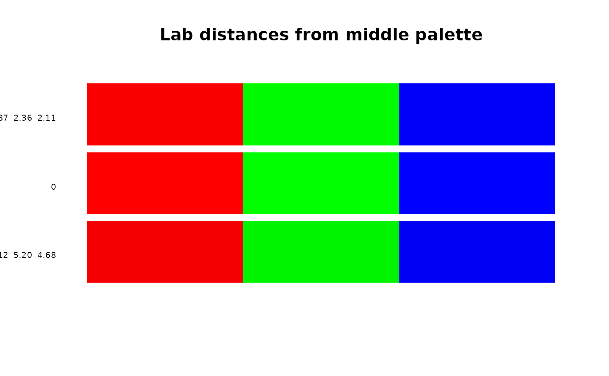

Measure the pointwise distance between two palettes
Details
The distance between two palettes (of equal length) is calculated pointwise using the Lab color space. A 'just noticeable difference' between colors is roughly 2.3.
Examples
pa0 <- c("#ff0000","#00ff00","#0000ff")
pa1 <- c("#fa0000","#00fa00","#0000fa") # 2.4
pa2 <- c("#f40000","#00f400","#0000f4") # 5.2
pal.dist(pa0,pa1) # 1.87, 2.36, 2.11
#> [1] 1.870682 2.360173 2.116649
pal.dist(pa0,pa2) # 4.12 5.20 4.68
#> [1] 4.124885 5.204223 4.667247
pal.bands(pa1,pa0,pa2, labels=c("1.87 2.36 2.11","0","4.12 5.20 4.68"))
title("Lab distances from middle palette")
